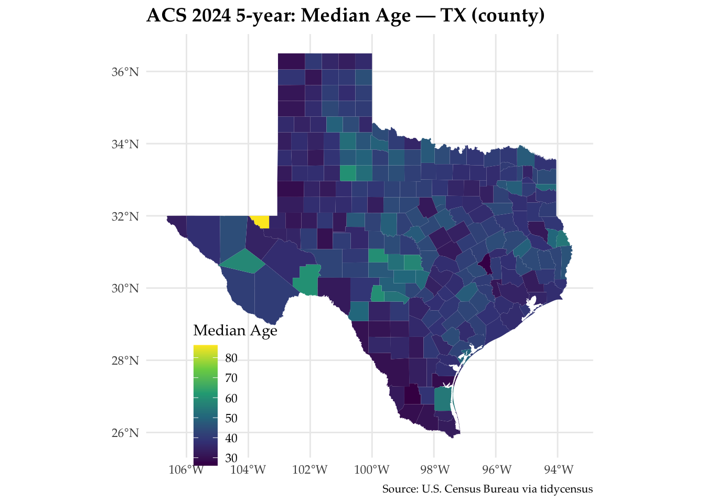
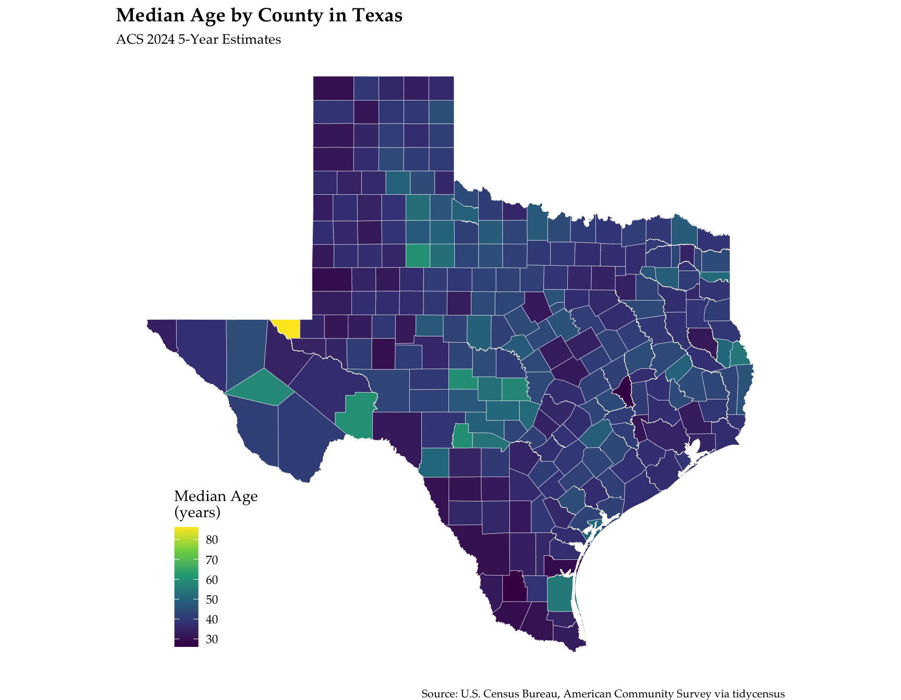
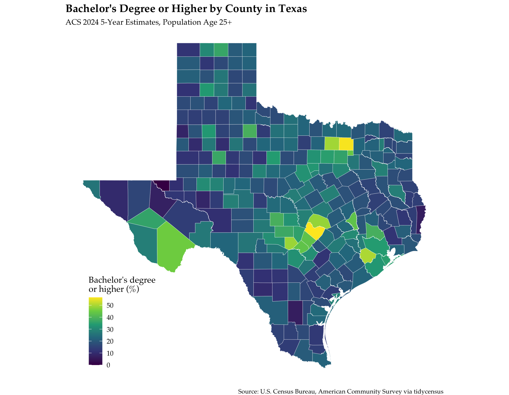

library(tidycensus)
library(tigris)
library(sf)
library(dplyr)
library(tidyr)
library(ggplot2)
library(readr)
options(tigris_use_cache = TRUE)Assignment 3
ACS via tidycensus
What you will produce
A tidy ACS dataset pulled with tidycensus, one choropleth map, one table, and a short methods note that takes the margins of error seriously.
Objective
Use tidycensus to retrieve ACS 2024 5-year estimates, build a tidy dataset, and produce one map and one table with a short interpretation.
1. Setup
a. Census API key
Obtain a Census API key — https://api.census.gov/data/key_signup.html
Done
- Install the key once, from the console, then never mention it again:
#| eval: false
census_api_key("YOUR_KEY", install = TRUE) # console only — not in your .qmdDone
- Install and load: tidycensus, tigris, sf, dplyr, tidyr, ggplot2, readr.
The key never goes in the document. install = TRUE writes it to your .Renviron once; every later session picks it up by itself. install = FALSE means the key sits in the file — and this file is going onto your public website. Add .Renviron to .gitignore.
Done
2. Choose a geography and variables
a. Geography
Geography: one of state, county, tract, or block group (within a state).
Counties in the state of Texas
b. Variables
Variables: at least two. For example B19013_001 (median household income) and B17001_002 (people below poverty).
B01002_001— Median age, total populationB15003_001— Total population age 25+B15003_022— Bachelor’s degreeB15003_023— Master’s degreeB15003_024— Professional school degreeB15003_025— Doctorate degree
- Counts
If you use a count such as B17001_002, also pull its denominator B17001_001 so you can report a rate. A count map is mostly a population map.
We will use the 25+ population as the denominator for education to calculate percentage of 25+ with bachelor’s degree or higher.
- Search the codes with
load_variables(2024, "acs5").
# Explore variables used in this assignment
vars <- load_variables(2024, "acs5")
vars |>
dplyr::filter(
grepl("^B01002|^B15003", name)
) |>
dplyr::select(name, label, concept) |>
dplyr::slice_head(n = 30)# A tibble: 30 × 3
name label concept
<chr> <chr> <chr>
1 B01002A_001 Estimate!!Median age --!!Total: Median Age by Sex (White Alone)
2 B01002A_002 Estimate!!Median age --!!Male Median Age by Sex (White Alone)
3 B01002A_003 Estimate!!Median age --!!Female Median Age by Sex (White Alone)
4 B01002B_001 Estimate!!Median age --!!Total: Median Age by Sex (Black or Afri…
5 B01002B_002 Estimate!!Median age --!!Male Median Age by Sex (Black or Afri…
6 B01002B_003 Estimate!!Median age --!!Female Median Age by Sex (Black or Afri…
7 B01002C_001 Estimate!!Median age --!!Total: Median Age by Sex (American Indi…
8 B01002C_002 Estimate!!Median age --!!Male Median Age by Sex (American Indi…
9 B01002C_003 Estimate!!Median age --!!Female Median Age by Sex (American Indi…
10 B01002D_001 Estimate!!Median age --!!Total: Median Age by Sex (Asian Alone)
# ℹ 20 more rows# 3) Parameters (EDIT ME)
state_abbr <- "TX"
geo_level <- "county" # options: state, county, tract, block group
my_vars <- c(
median_age = "B01002_001",
edu_total = "B15003_001",
bachelors = "B15003_022",
masters = "B15003_023",
professional = "B15003_024",
doctorate = "B15003_025"
)
year_acs <- 2024
survey <- "acs5"3. Download, with geometry
a. get_acs
Use get_acs() with your geography and variables, geometry = TRUE.
b. Estimate and Margin of Error
Keep the estimate and the margin of error. Every ACS number is an estimate from a sample; the MOE is not decoration.
acs_file <- paste0("acs_", state_abbr, "_", year_acs, ".csv")
if (file.exists(acs_file)) {
acs_data <- read_csv(
acs_file,
col_types = cols(
GEOID = col_character(),
.default = col_guess()
)
)
county_geom <- counties(
state = state_abbr,
year = year_acs,
cb = TRUE,
class = "sf"
) |>
select(GEOID, geometry)
acs_wide <- county_geom |>
left_join(acs_data, by = "GEOID")
} else {
acs_wide <- get_acs(
geography = geo_level,
variables = my_vars,
state = state_abbr,
year = year_acs,
survey = survey,
geometry = TRUE,
output = "wide"
)
write_csv(
st_drop_geometry(acs_wide),
acs_file
)
}# 5) Derive bachelor's degree or higher rate and carry the MOE through
acs_wide <- acs_wide |>
rowwise() |>
mutate(
bachelors_plus = sum(
c(bachelorsE, mastersE, professionalE, doctorateE)
),
bachelors_plus_moe = moe_sum(
c(bachelorsM, mastersM, professionalM, doctorateM),
c(bachelorsE, mastersE, professionalE, doctorateE)
),
bachelors_plus_rate = bachelors_plus / edu_totalE,
bachelors_plus_rate_moe = moe_prop(
bachelors_plus,
edu_totalE,
bachelors_plus_moe,
edu_totalM
)
) |>
ungroup()Map
# 6) Map
ggplot(acs_wide) +
geom_sf(aes(fill = median_ageE), color = NA) +
scale_fill_viridis_c(name = "Median Age") +
labs(
title = paste0(
"ACS ", year_acs, " 5-year: Median Age — ",
state_abbr, " (", geo_level, ")"
),
caption = "Source: U.S. Census Bureau via tidycensus"
) +
theme_minimal() +
theme(
text = element_text(family = "Palatino"),
plot.title = element_text(size = 14, face = "bold"),
plot.caption = element_text(size = 8),
legend.position = "inside",
legend.position.inside = c(0.2, 0.15)
)
Table
# 7) Table (top/bottom by bachelor's degree or higher rate, with MOE)
top10 <- acs_wide |>
st_drop_geometry() |>
arrange(desc(bachelors_plus_rate)) |>
select(
NAME,
bachelors_plus_rate,
bachelors_plus_rate_moe,
bachelors_plus,
bachelors_plus_moe
) |>
slice_head(n = 10)
bottom10 <- acs_wide |>
st_drop_geometry() |>
arrange(bachelors_plus_rate) |>
select(
NAME,
bachelors_plus_rate,
bachelors_plus_rate_moe,
bachelors_plus,
bachelors_plus_moe
) |>
slice_head(n = 10)
#top10
#bottom10# 8) Save outputs
write_csv(
st_drop_geometry(acs_wide),
paste0("acs_", state_abbr, "_", year_acs, ".csv")
)4. Deliverables
a. Map
Map — a choropleth of one variable, with a clear legend and title.
# Choropleth of median age by Texas county
ggplot(acs_wide) +
geom_sf(
aes(fill = median_ageE),
color = "white",
linewidth = 0.1
) +
scale_fill_viridis_c(
name = "Median Age\n(years)"
) +
labs(
title = "Median Age by County in Texas",
subtitle = paste0("ACS ", year_acs, " 5-Year Estimates"),
caption = "Source: U.S. Census Bureau, American Community Survey via tidycensus"
) +
theme_void() +
theme(
text = element_text(family = "Palatino"),
plot.title = element_text(size = 14, face = "bold"),
plot.subtitle = element_text(size = 10),
plot.caption = element_text(size = 8),
legend.position = "inside",
legend.position.inside = c(0.15, 0.18)
)
# Choropleth of bachelor's degree or higher by Texas county
ggplot(acs_wide) +
geom_sf(
aes(fill = bachelors_plus_rate * 100),
color = "white",
linewidth = 0.1
) +
scale_fill_viridis_c(
name = "Bachelor's degree\nor higher (%)"
) +
labs(
title = "Bachelor's Degree or Higher by County in Texas",
subtitle = paste0("ACS ", year_acs, " 5-Year Estimates, Population Age 25+"),
caption = "Source: U.S. Census Bureau, American Community Survey via tidycensus"
) +
theme_void() +
theme(
text = element_text(family = "Palatino"),
plot.title = element_text(size = 14, face = "bold"),
plot.subtitle = element_text(size = 10),
plot.caption = element_text(size = 8),
legend.position = "inside",
legend.position.inside = c(0.15, 0.18)
)
b. Table
Table — the top and bottom ten areas by the other variable, with the margin of error beside each estimate.
# 7) Table — top and bottom 10 counties by bachelor's degree or higher rate
top10 <- acs_wide |>
st_drop_geometry() |>
arrange(desc(bachelors_plus_rate)) |>
transmute(
Group = "Top 10",
County = NAME,
`Bachelor's degree or higher (%)` = bachelors_plus_rate * 100,
`MOE (%)` = bachelors_plus_rate_moe * 100
) |>
slice_head(n = 10)
bottom10 <- acs_wide |>
st_drop_geometry() |>
arrange(bachelors_plus_rate) |>
transmute(
Group = "Bottom 10",
County = NAME,
`Bachelor's degree or higher (%)` = bachelors_plus_rate * 100,
`MOE (%)` = bachelors_plus_rate_moe * 100
) |>
slice_head(n = 10)
edu_table <- bind_rows(top10, bottom10) |>
mutate(
`Bachelor's degree or higher (%)` =
round(`Bachelor's degree or higher (%)`, 1),
`MOE (%)` = round(`MOE (%)`, 1)
)
knitr::kable(
edu_table,
caption = "Texas Counties with the Highest and Lowest Bachelor's Degree or Higher Rates"
)| Group | County | Bachelor’s degree or higher (%) | MOE (%) |
|---|---|---|---|
| Top 10 | Travis County, Texas | 56.6 | 0.7 |
| Top 10 | Collin County, Texas | 56.2 | 0.7 |
| Top 10 | Fort Bend County, Texas | 50.2 | 1.0 |
| Top 10 | Denton County, Texas | 49.4 | 0.7 |
| Top 10 | Kendall County, Texas | 48.9 | 2.8 |
| Top 10 | Williamson County, Texas | 48.4 | 0.8 |
| Top 10 | Brewster County, Texas | 45.5 | 6.2 |
| Top 10 | Rockwall County, Texas | 44.5 | 2.1 |
| Top 10 | Comal County, Texas | 43.3 | 1.5 |
| Top 10 | Hays County, Texas | 43.2 | 1.7 |
| Bottom 10 | Loving County, Texas | 0.0 | 48.4 |
| Bottom 10 | Newton County, Texas | 6.8 | 1.8 |
| Bottom 10 | Duval County, Texas | 6.8 | 3.0 |
| Bottom 10 | Reeves County, Texas | 7.4 | 2.1 |
| Bottom 10 | Cochran County, Texas | 8.2 | 2.4 |
| Bottom 10 | Upton County, Texas | 8.7 | 4.4 |
| Bottom 10 | Hudspeth County, Texas | 9.6 | 2.7 |
| Bottom 10 | Dimmit County, Texas | 9.8 | 3.7 |
| Bottom 10 | Terry County, Texas | 9.8 | 2.5 |
| Bottom 10 | Garza County, Texas | 10.2 | 3.4 |
c. Uncertainty check
Uncertainty check — name one pair of areas in your table whose confidence intervals overlap. What does that do to the ranking you just published?
uncertainty_check <- edu_table |>
mutate(
lower = `Bachelor's degree or higher (%)` - `MOE (%)`,
upper = `Bachelor's degree or higher (%)` + `MOE (%)`
) |>
arrange(desc(`Bachelor's degree or higher (%)`)) |>
mutate(
next_county = lead(County),
next_lower = lead(lower),
next_upper = lead(upper),
overlap = lower <= next_upper & upper >= next_lower
) |>
filter(overlap) |>
slice_head(n = 1)
uncertainty_check# A tibble: 1 × 10
Group County Bachelor's degree or…¹ `MOE (%)` lower upper next_county
<chr> <chr> <dbl> <dbl> <dbl> <dbl> <chr>
1 Top 10 Travis County… 56.6 0.7 55.9 57.3 Collin Cou…
# ℹ abbreviated name: ¹`Bachelor's degree or higher (%)`
# ℹ 3 more variables: next_lower <dbl>, next_upper <dbl>, overlap <lgl>Travis County has an estimated bachelor’s-degree-or-higher rate of 56.6%, with a margin of error of ±0.7 percentage points. Its confidence interval therefore extends from approximately 55.9% to 57.3%. This interval overlaps with the confidence interval for Collin County. Although Travis County ranks above Collin County based on the point estimates, the overlapping intervals indicate that this ordering should not be treated as definitive.
Loving County provides an even stronger example of uncertainty in the rankings. Its estimated bachelor’s-degree-or-higher rate is 0.0%, but the margin of error is ±48.4 percentage points. This very large uncertainty means that its position at the bottom of the table should not be interpreted as a precise ranking. The result illustrates how small-population counties can have highly uncertain ACS estimates.
d. Methods note
Methods note (≤ 200 words) — your choices of geography and variables, and what the MOEs do to your interpretation.
This analysis uses 2024 ACS 5-year estimates for all counties in Texas. County geography was selected because it provides a useful balance between statewide coverage and local variation. Using counties makes it possible to compare patterns across Texas without producing a map that is too detailed or difficult to read.
The two variables used are median age and educational attainment. Median age comes from B01002_001. Educational attainment is measured as the percentage of the population age 25 and older with a bachelor’s degree or higher. This measure was calculated by combining the bachelor’s, master’s, professional, and doctoral degree categories from ACS table B15003 and dividing that total by the population age 25 and older.
Margins of error were retained because ACS values are estimates based on a sample rather than a complete count. The margins of error for the education measure were propagated through both the combined degree categories and the final percentage calculation. This affects interpretation because counties with similar estimates may have overlapping confidence intervals. When intervals overlap, the apparent difference between two counties may not be meaningful, so the exact ranking should be treated cautiously rather than as a definitive ordering.
e. Publish
Publish as assign03.qmd under Assignments on your website.
Note: Published under assign03.html
Notes
Prefer rates to counts where a denominator exists, and propagate the MOE with
moe_prop(),moe_ratio()ormoe_sum()rather than dropping it.Mapping tracts or block groups for a whole state is slow and unreadable — filter to one county or metro area first.
Two different caches. options(tigris_use_cache = TRUE) caches map geometry and is still correct. The cache argument of load_variables() is not: current tidycensus reports it “deprecated and ignored — variable metadata is now loaded from the Census API without writing to a local cache.” Drop it.